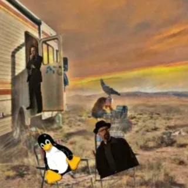
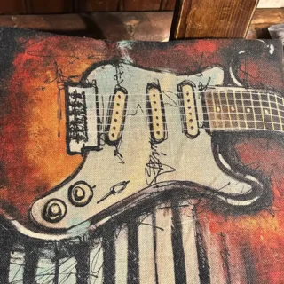

deqrocks
Project lead and primary development
We are specialized on T2 Macs. Vanilla Fedora. DKMS modules.
Built by us. Shipped to you.
The fingers you enrolled in macOS unlock the login screen and sudo on Linux. The Secure Enclave keeps the fingerprint and sends Linux its verdict, through stock fprintd.
DSP for the internal speakers and microphone, with processing derived from macOS for every model. Sounds like macOS.
The SMC controls the heat pipe budget natively and lowers CPU and GPU limits in steps, like on macOS, instead of throttling the CPU to 800 MHz. At least 30% more compute, no fan daemon needed.
Dramatic power savings without losing performance. Every T2 MacBook reaches its deepest idle state, even with the display on, thanks to Panel Self Refresh, Wi-Fi deep sleep and Thunderbolt that powers off when idle.
The iGPU is always primary. The dGPU wakes for offloading and turns off on its own, through suspend and resume. On the MacBookPro15,1, 16,1 and 16,4.
AirDrop with iPhones, iPads and Macs in both directions, while your Mac stays on its Wi-Fi network. Quick Share with Android phones. One window and one notification for both.
Same as the original, but adjustable. The display white follows the light in the room, with an evening mode on a schedule. Automatic brightness follows the macOS curve.
T2 hardware video encoding. HEVC on the Apple Video Encoder, usable through ffmpeg and our HandBrake build.
A tablet or iPad as a wireless second display. The T2 encodes the stream with low latency, Sunshine sends it.
Precision trackpad, actuator driver and programmable Force Click. Set click pressure and Force Click actions, with real haptic feedback.
Our own daemon, optimized for energy saving and convenience. Media and F-key rows, multitouch gestures for volume and brightness and the Touch ID prompt. Dark until you touch it.
The T2 runs its own operating system, and now you can see into it. T2 Journal merges the bridgeOS logs with your Linux journal. T2 Debug shows every bridgeOS process and streams its log live.
Aimed upstream.
Bluetooth / btbcm: LE scanning on Broadcom controllersBluetooth / btbcm: ACL priority on Broadcom controllersBluetooth / hci_bcm4377: Probe with another controller presentBluetooth / hci_bcm4377: Link power managementBluetooth / hci_bcm4377: Cold resume after S3DRM / amdgpu: 5K display on iMac20,1 and iMac20,2DRM / amdgpu: Navi14 memory clock levels on MacBookPro16,1DRM / i915: Panel Self Refresh on T2 eDP panelsDRM / i915: Display brightness after screen lock and resume in iGPU modeHID / Input: hid-apple ignores the T2 trackpadHID / Input: Keyboard backlight brightness levelsHID / Input: Keyboard backlight after resumeHID / t2hid: Butterfly keyboard debounceHID / Touch Bar: Runtime PM in suspend and resumeHID / Touch Bar: Fn double press switches the layerPCI / amdgpu: dGPU after resume on MacBookPro15,1T2 / apple_t2_bridge: Upstreamable replacement for apple-bce and t2bceThunderbolt: Device linksThunderbolt: Ice Lake runtime power offThunderbolt: Titan Ridge runtime power offWi-Fi / brcmfmac: Power save timeoutWi-Fi / brcmfmac: BCM4364/3 firmware selection without antenna SKUWi-Fi / brcmfmac: Deep sleep on BCM4364 and BCM4377Wi-Fi / brcmfmac: Cold resume after S3Wi-Fi / brcmfmac: BCM4377 flowring deleteWi-Fi / brcmfmac: AWDL on BCM4364 and BCM4377Wi-Fi / brcmfmac: BCM4355 and BCM4364 ND offload offWi-Fi / brcmfmac: BCM4364 and BCM4377 hotspot authenticationWi-Fi / brcmfmac: BCM4364 TX beamforming offx86 / cache: Fast CPU bring-up after suspendGNOME Shell: Volume slider on DSP sinksLinux Kernel: Card reader power managementsystemd: Display brightness across rebootsupower: Keyboard backlight after re-enumerationUsed T2 MacBooks offer remarkable hardware for their price: unibody aluminium, Retina displays, the Touch Bar and unmatched build quality. Until 2026 their Linux support was poor. Most T2 Macs share the same drivers, so porting one meant porting a whole family of devices. That was the chance to make them the best Linux laptops for the money.
That was the promise KAIT2EN started with. T2 Macs were missing drivers in the mainline kernel, and the existing fixes reached users late, through patched kernels maintained by third parties. We put the T2 drivers and fixes into DKMS modules on stock Fedora and shipped them straight from the developers. Fix by fix, regression by regression. Sometimes up to 10 updates per day. And brave users tested.
It worked. A T2 Mac now reaches package C10 out of the box. Touch ID, hybrid graphics, True Tone, AirDrop, DSP...you name it, we implemented or fixed it. T2 Macs now work better than they did on macOS when these machines were new. Fixed kernel code goes upstream. See the patches page.
Even the much maligned T2 chip turned out to be an ally. It gives us more control over the hardware than the simple firmware of a generic PC. The SMC manages the thermal budget for T2 Zone Power, and the T2 encodes video in hardware. The bad reputation of this generation came from not knowing it.
Being a niche works in our favour too. Many of the drivers a T2 Mac needs exist only for Apple hardware. A trackpad regression on some Dell or a Realtek sound regression on some HP never reaches us.
While we are submitting the patches to upstream, we are continuously polishing. Fedora ships the kernel, KAIT2EN ships the T2 modules as DKMS packages. A fix reaches your Mac without waiting for a new kernel, and when a Fedora kernel update breaks something on T2 hardware, we can respond right away. Because we don't need to build the kernel.
The goal has not changed. Once a fix lands upstream it leaves KAIT2EN, until a T2 Mac needs nothing beyond a stock distribution.
KAIT2EN is made for enthusiasts and developers. Everyone is welcome to join, but you should be comfortable in a terminal. Know what you are signing up for:
Donations go directly to the developer you choose.
Project lead and primary development

GMUX, SMC, Thunderbolt and iMac 5K

Auto-installer, PSR and scatter-gather support
The installation starts in macOS and continues in Fedora.
curl -fsSL https://github.com/kaiT2en/KaiT2en-Fedora/releases/latest/download/install-kait2en-fedora.sh | bashRun this in macOS with an empty USB drive attached. The script downloads and verifies the official Fedora image, collects the Apple firmware from your Mac and writes a bootable installer.
Ask before you break something, or tell us how you broke it.